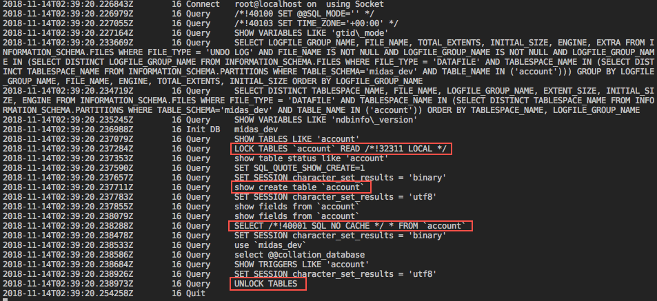
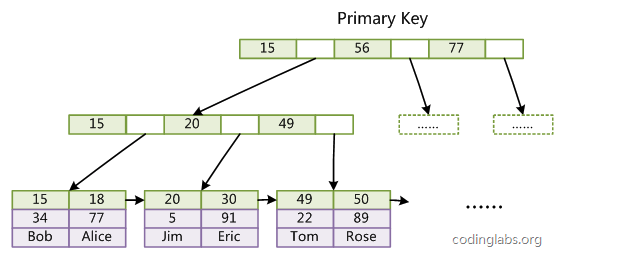
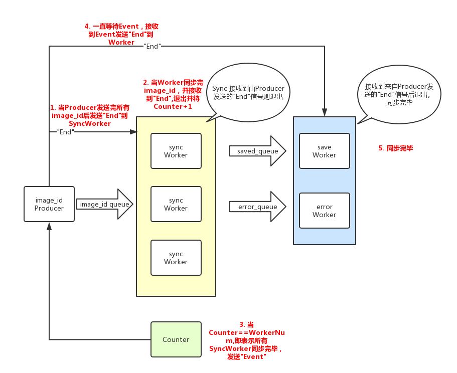

数据量小(14w)
第一版为最基础的版本，第一版仅仅能迁移faceset表中与face表关联的数据。简单可用。
思路:
SELECT id, anchor FROM face WHERE id in face2set;从anchor中json解析出image_id使用set去重开启30个线程从bucket迁移
数据量大(7000w+)
第一版不足：
SELECT id FROM face这种形式思路：
FLUSH TABLES WITH READ LOCK操作。ALTER TABLE mysqldump等操作READ LOCAL表锁, 支持某些类型的并发操作。mysqldump内部机制
mysqldump -uroot -p midas_dev account > midas_dev.sql

LOCK TABLES account READ: 对于account表施加读锁show create table account: 查看并导出account表的建表语句SELECT * FROM account: 导出所有的数据SHOW TRIGGERS LIKE account: 导出trggerUNLOCK TABLES : 释放对account表的读锁SELECT：
按照偏移量查询，这样可以有针对性的获取线上数据库的数据，避免了使用SELECT * FROM table和锁表，控制好每次读取的LIMIT即可以保证对线上数据库几乎无影响。
结论：
mysqldump: 只适合用于数据库备份，不适合于从数据库取数据，即使是在数据库业务低峰期，也会对线上业务的有一定的影响。SELECT: 适合于从线上数据库读取数据，不适合做数据库的备份，即不能保证数据库的一致性，对业务的影响低，适合于当前数据迁移的场景。OFFSET LIMIT vs BETWEEN AND？OFFSET LIMIT😪
执行如下语句N从1000到1000000.
SELECT ID, anchor FROM face LIMIT 1000 OFFSET N;
| N | 耗时 |
|---|---|
| 1000 | 192ms |
| 10000 | 653ms |
| 100000 | 985ms |
| 1000000 | 1s4ms |
| 10000000 | 5s25ms |
由上述耗时可以看出LIMIT OFFSET语句的查询效率受限于OFFSET N。
原因很简单, 即LIMIT 200 OFFSET 1000: 是扫描数据表前1200条记录，取后200条舍弃前1000条。
BETWEEN AND👊
执行如下语句获取N条数据.
SELECT id, anchor FROM face WHERE id BETWEEN A AND B;
| N | 耗时 |
|---|---|
| 853 | 142ms |
| 45149 | 1s300ms |
| 62835 | 1s630ms |
| 646765 | 1s543ms |
上述耗时可以看出在不同的A，B区间内获取不同数量的内容，耗时均在2s以内，与A，B位置无关。
原因即，BETWEEN A AND B利用MySQL主键索引的特定，没有额外的数据查询，即这样可以在O(logn)的时间复制度内完成查询。

上图是MySQL存储引擎Innodb，B+数索引的结构，即可以看到B+数叶子节点会索引对应的文件，当进行范围查找时，通过查找A第一个主键找到叶子节点的开始节点文件指针，再查找B找到结束节点的叶子指针，根据B Tree的特定，以及磁盘顺序IO，即可以按照磁盘顺序IO读取所有要的范围的数据。查询复杂度为O(logn).
hash, set, trie, bloomfilter, external sorting ...
数据量：7000w*30byte = 2.1G， 该数据量可以存储在内存中 4c8g。
hash: O(n)
set: O(nlogn)
trie: O(BASE64_SIZE*key_length*N)
整个同步的脚本是分离的，即一个脚本为数据库同步，直接根据上一次同步的最大自增主键继续进行查找，另一个脚本为图片传输同步。
图片传输过程中实时记录，已成功的图片id，和发生错误的图片id，在程序崩溃之后可以根据已保存的id和全部id获得未保存的id，并将发生错误的图片id重新同步。
Python 多线程编程的范式？这里我只提供个人觉得很好用的一个范式，多生产者单消费者模型，这种多对一，或者一对多的情况可以使用无锁化的队列实现。
sync_producer: 读取图片id的生产者，将图片id放入imageid_queue中。（一个生产者）sync_worker:同步图片worker，从imageid_queue中获取图片id，并执行迁移操作。（多个消费者）error_worker:保存迁移图片失败的worker，从error_queue中获取图片id，并写入文件。（同上）Event, 线程之间的资源控制使用MutexTalk is cheap, show me your code
从MySQL数据库同步数据代码简单，单线程，增量同步即可。介绍数据同步脚本

# coding: utf-8import csvimport functoolsimport timeimport threadingimport Queueimport base64import oss2ENV = "PROD" # NOTE PROD or TEST(同步很一小部分图片到测试10.104.4.50:12029进行验证)BJ_OSS_ENDPOINT = 'oss-cn-beijing.aliyuncs.com' # 'oss-cn-beijing-internal.aliyuncs.com'NEW_BUCKET = { 'access_id': '*******', 'access_key': '*******', 'bucket_name': '*******'}OLD_BUCKET = { 'origin': '*******', 'access_id': '*******', 'access_key': '*******', 'bucket_name': '*******'}TEST_BUCKET = { 'origin': '*******', 'access_id': '*******', 'access_key': '*******', 'bucket_name': '*******'}# MySqlDBHOST = '*******'USER = '*******'PASSWORD = '*******'DB = '*******'# file cacheLATEST_IMAGES_PATH = "./mysql_image.csv"SAVED_IMAGES_PATH = "./saved_image.csv"ERROR_IMAGES_PATH = './error_image.csv'new_auth = oss2.Auth(NEW_BUCKET['access_id'], NEW_BUCKET['access_key'])new_bucket = oss2.Bucket(new_auth, BJ_OSS_ENDPOINT, NEW_BUCKET['bucket_name'], connect_timeout=5)old_auth = oss2.Auth(OLD_BUCKET['access_id'], OLD_BUCKET['access_key'])old_bucket = oss2.Bucket(old_auth, BJ_OSS_ENDPOINT, OLD_BUCKET['bucket_name'])test_auth = oss2.Auth(TEST_BUCKET['access_id'], TEST_BUCKET['access_key'])test_bucket = oss2.Bucket(test_auth, BJ_OSS_ENDPOINT, TEST_BUCKET['bucket_name'])MAX_QUEUE_SIZE = 100000imageid_queue = Queue.Queue(maxsize=MAX_QUEUE_SIZE)check_queue = Queue.Queue(maxsize=MAX_QUEUE_SIZE)error_queue = Queue.Queue(maxsize=MAX_QUEUE_SIZE)save_queue = Queue.Queue(maxsize=MAX_QUEUE_SIZE)end_event = threading.Event()WORKER_NUM = 30CHECK_WORKER_NUM = 30LOG_LIMIT = 1000# 总数 2018-11-12 15:27 数量TOTAL = 74110364class Counter(object): def __init__(self, start=0): self.lock = threading.Lock() self.value = start def increment(self): current_threading = threading.currentThread() self.lock.acquire() try: self.value = self.value + 1 print "{}: worker finish. counter: {}".format(current_threading, self.value) if self.value == WORKER_NUM: print "all worker finish" end_event.set() finally: self.lock.release()counter = Counter()def omit_exception(method=None, return_value=None): if method is None: return functools.partial(omit_exception, return_value=return_value) .wraps(method) def _decorator(*args, **kwargs): try: return method(*args, **kwargs) except Exception as e: print "{}: {}".format(method.__name__, e) return return_value return _decoratordef timeit(method): .wraps(method) def _decorator(*args, **kwargs): ts = time.time() result = method(*args, **kwargs) te = time.time() print ("[function] {} run: {}ms {}min".format(method.__name__, round((te - ts) * 1000), round((te - ts) / 60))) return result return _decoratordef get_update_image(): latest_image = set() saved_image = set() cnt = 0 with open(LATEST_IMAGES_PATH, 'r') as f: csv_reader = csv.reader(f, delimiter=',') for it in csv_reader: if cnt % LOG_LIMIT == 0: print cnt cnt += 1 image_id = base64.urlsafe_b64encode(base64.b64decode(it[1])) latest_image.add(image_id) with open(SAVED_IMAGES_PATH, 'r') as f: csv_reader = csv.reader(f, delimiter=',') for it in csv_reader: saved_image.add(it[0]) update_image = latest_image - saved_image print ("need sync: {} saved: {}".format(len(update_image), len(saved_image))) return update_imagedef get_save_image(): saved_image = set() with open(SAVED_IMAGES_PATH, 'r') as f: csv_reader = csv.reader(f, delimiter=',') for it in csv_reader: saved_image.add(it[0]) return saved_imagedef sync_producer(): update_image = get_update_image() cnt = 1 for it in update_image: imageid_queue.put((cnt, it)) cnt = cnt + 1 for _ in range(WORKER_NUM): imageid_queue.put((cnt, "end")) while not end_event.isSet(): event_is_set = end_event.wait() if event_is_set: error_queue.put("end") save_queue.put("end")def sync_worker(total=TOTAL): st = time.time() current_threading = threading.currentThread() print "{} worker start".format(current_threading) while True: idx, image_id = imageid_queue.get() if image_id == "end": break now = time.time() time_used = round(now - st, 2) content = get_content(image_id) success = True if content is None: print "Fs Oss Error: image_id: {}".format(image_id) success = False oss_resp = put_oss(image_id, content) if oss_resp is None or oss_resp.resp.status != 200: print "Oss Error: image_id: {}".format(image_id) success = False if success: save_queue.put(image_id) else: error_queue.put(image_id) if idx % 1000 == 0: print "{}/{} {} {}s 还需要: {}min".format(idx, total, image_id, time_used, round((time_used * total) / ( idx * 60) - time_used / 60, 2)) counter.increment()def error_worker(): with open(ERROR_IMAGES_PATH, 'a') as f: csv_writer = csv.writer(f, delimiter=',') while True: image_id = error_queue.get() if image_id == "end": break csv_writer.writerow([image_id])def save_worker(): with open(SAVED_IMAGES_PATH, 'a') as f: csv_writer = csv.writer(f, delimiter=',') while True: image_id = save_queue.get() if image_id == "end": break csv_writer.writerow([image_id])()def get_content(image_id): res = old_bucket.get_object(image_id) if res is not None and res.resp.status == 200: content = res.read() return content()def put_oss(key, content): if ENV == "TEST": res = test_bucket.put_object(key, content) elif ENV == "PROD": res = new_bucket.put_object(key, content) else: print "ENV error!!!!" return resdef get_oss(key): res = new_bucket.get_object("hello") print res.resp.status, res.read()def run_sync(): total = 34595436 read_t = threading.Thread(target=sync_producer) read_t.start() error_t = threading.Thread(target=error_worker) error_t.start() save_t = threading.Thread(target=save_worker) save_t.start() for i in range(WORKER_NUM): worker_t = threading.Thread(target=sync_worker, args=(total,)) worker_t.start() main_thread = threading.currentThread() for t in threading.enumerate(): if t is not main_thread: t.join() print "sync successfully!"def remove_duplicate(): image_set = set() with open(SAVED_IMAGES_PATH, 'rb') as f: csv_reader = csv.reader(f, delimiter=',') for it in csv_reader: image_set.add(it[0]) with open(SAVED_IMAGES_PATH, 'wb') as f: csv_writer = csv.writer(f, delimiter=',') for it in image_set: csv_writer.writerow([it])if __name__ == '__main__': run_sync() # remove_duplicate()CRUD，以后需要多学习。